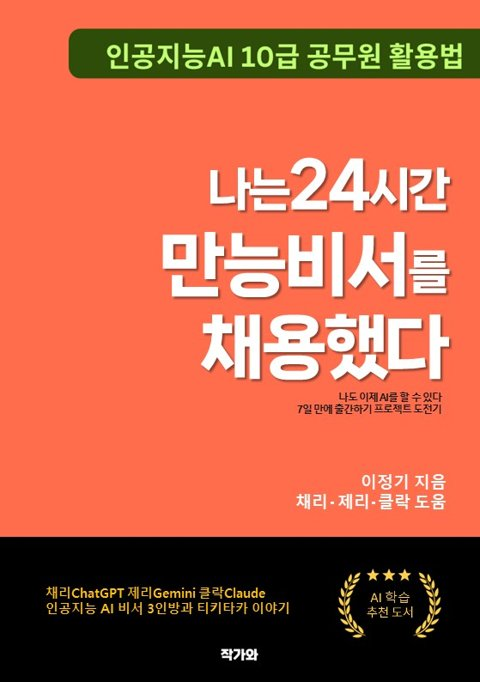

STORY
일곱 갈래 길
- 1
촌놈 1968 ~
전라남도 담양에서 태어나 창평고등학교를 다녔습니다.
- 2
뱃놈 1988 ~ 1995
한국해양대학교 기관공학과에서 해군사관의 꿈을 키웠습니다. 학내민주화운동으로 해군ROTC에서 제적되어 육군으로 복무했고, 복학 뒤 다시 제적되었으나 노무현·문재인 합동법률사무소를 통한 행정소송에서 이겨 학위를 받았습니다.
- 3
IT·노사모 1990년대 후반 ~ 2000
인터넷에 눈을 떠 IT기획과 홍보마케팅 일을 했습니다. 2000년 총선 때 노무현 후보 홈페이지 홍보를 돕게 된 인연으로 정치인 팬클럽 ‘노사모’ 창립을 처음 제안했습니다. (아이디: 늙은여우)
- 4
공보·지방행정 2004 ~ 2014
열린우리당 중앙당에서 당보 발행과 TV토론 지원, 홍보 공보 업무를 맡았고, 국회 원내 대변인실을 거쳐 광주광역시 대변인실에서 시장 연설문을 작성했습니다. 이 시기에 SNS 활동을 시작했습니다.
- 5
정치참모 2014 ~ 2022
국회의원 보좌관으로 두 차례 일했고, 더불어민주당 광주광역시당 정책실장과 지역위원회 사무국장을 거쳐 제19대·제20대 대통령선거 중앙선거대책위원회에서 공보와 전략을 맡는 등 1998년 이후 30여 차례의 치열한 선거를 치렀습니다.
- 6
정책참모 2022 ~ 2026
광주광역시의회 의장비서실장과 특별전문위원으로 시와 시교육청 예산결산을 분석하고 예결특위·5·18특위·기후특위·노동특위·인공지능실증특위 등을 지원했습니다. 2026년 7월 통합특별시의회 출범과 함께 교육특별수석전문위원으로 일했습니다.
- 7
작가·플로우워커 2026.10 ~
현미경과 망원경으로 정치와 행정을 본 경험을 글과 책으로 나눕니다. 인공지능 10급 공무원 활용법, 정책선거 노하우 등을 출간했으며 선출직 어공들을 위한 컨설팅 활동을 하고 있습니다. 정치와 행정, 사람과 정책, 기술과 행정, AI와 인간을 연결하며 새로운 흐름을 설계합니다.